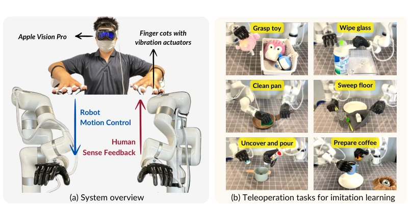
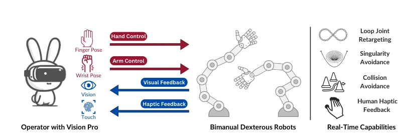
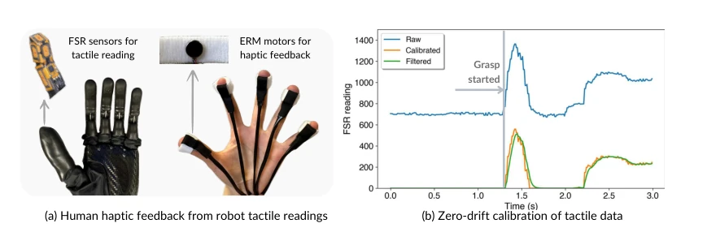
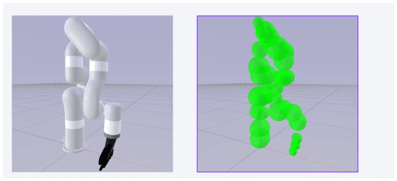
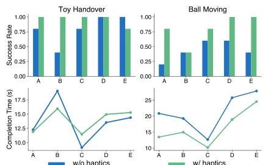
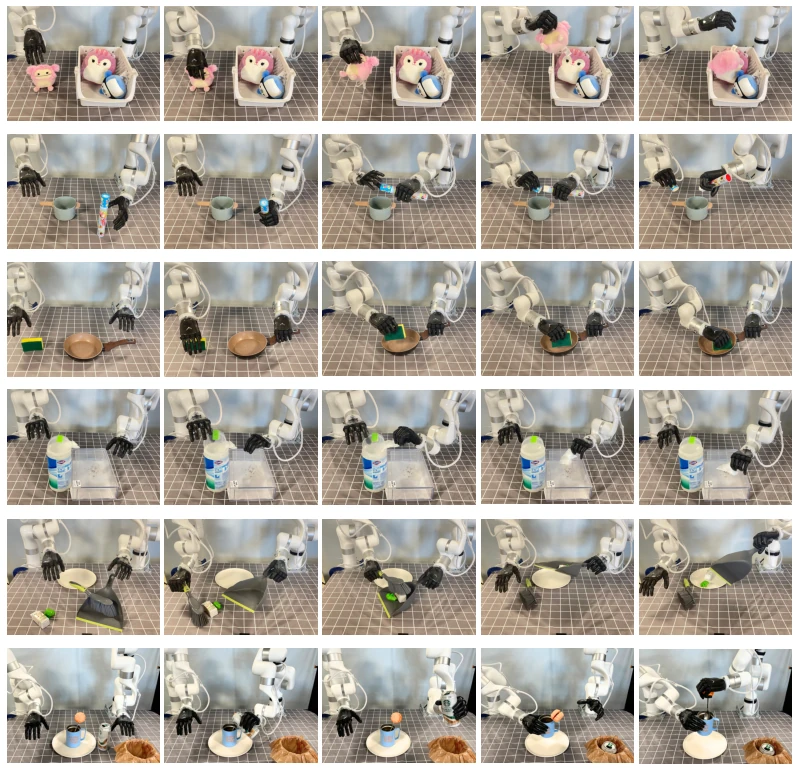
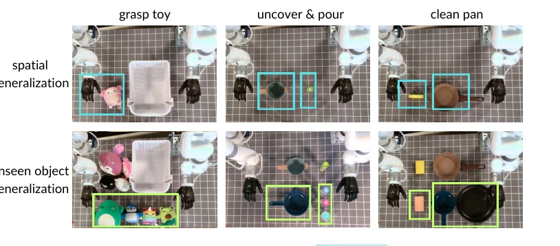
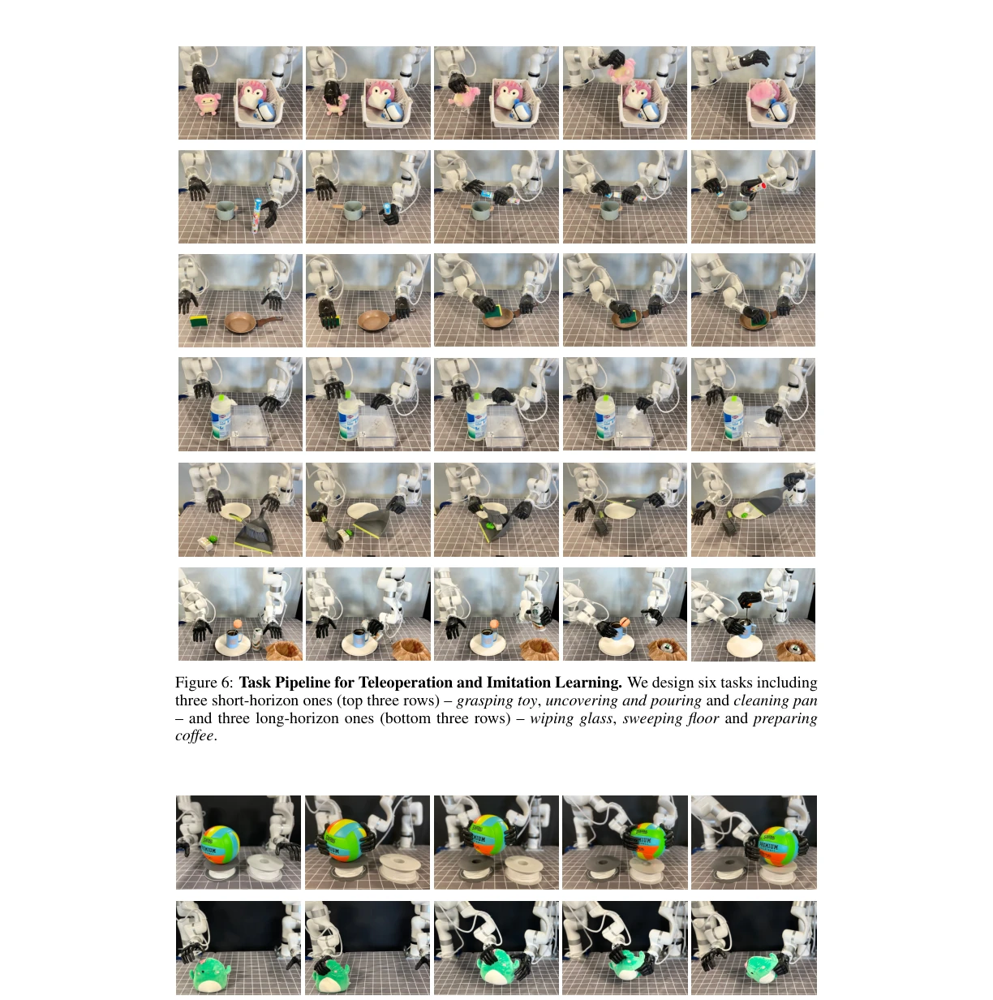

这系统把 Apple Vision Pro 和低成本触觉反馈结合得挺巧妙，双灵巧手操作确实比单臂强，实时性也达标。不过，过度依赖 Vision Pro 的追踪精度是个隐患，手指自遮挡时控制会抽风。触觉反馈用$1.2 的 ERM 电机，能震但难传细微力觉，有点“隔靴搔痒”，对轻触物体感知有限。好在避障和奇点处理得挺溜，数据质量确实能提升模仿学习泛化性。算是给 VR 遥控机器人开了个新路子，但硬件门槛和触觉精度还得继续卷，别指望靠几个震动马达就能完美模拟真实力反馈。此外，系统对特定硬件配置依赖较强，通用性可能受限，未来若融合穿戴设备或许能缓解追踪问题。
This system cleverly integrates Apple Vision Pro with low-cost haptic feedback. Dual dexterous hand operation is indeed superior to single-arm, and real-time performance also meets standards. However, over-reliance on Vision Pro's tracking accuracy is a potential risk; control becomes erratic when fingers self-occlude. Haptic feedback uses $1.2 ERM motors, can vibrate but difficult to transmit subtle force perception, somewhat like "scratching through boots", limited perception for light-touch objects. Fortunately, obstacle avoidance and singularity handling are quite smooth; data quality indeed improves imitation learning generalization. It counts as paving a new path for VR teleoperation robots, but hardware thresholds and haptic accuracy still need to continue competing; do not expect perfect simulation of real force feedback relying on just a few vibration motors. Additionally, the system relies heavily on specific hardware configurations, generalizability may be limited; future integration with wearable devices might alleviate tracking issues.
Existing teleoperation systems face significant challenges in dual dexterous hand coordination. Traditional methods such as ALOHA [5,6] rely on manipulator kinematic equivalence, offloading obstacle avoidance and singularity management pressure to human operators, and are highly robot-specific. Vision-based solutions such as AnyTeleop [4] are general but require high-end GPU processing, mainly focus on single-arm, and struggle to handle complex dual-hand spatiotemporal synchronization. Glove-based solutions [18-21] have high costs and are hand-shape specific. Human demonstration data is the critical bottleneck of imitation learning, but low-quality collection directly leads to poor strategy generalization. This paper aims to solve the problems of real-time performance, safety, and lack of haptic immersion in dual dexterous hand teleoperation, allowing ordinary people to efficiently collect high-quality long-cycle task data, promoting the development of dexterous manipulation and imitation learning.

Figure 1: System Overview and Task Suits. (a) Hand poses captured by Apple Vision Pro are con- verted into robot motion control commands for real-time teleoperation. The robot provides sensory feedback, including vision and touch, to operators via Vision Pro and actuator-equipped finger cots. (b) We design diverse short-horizon (left-column) and long-horizon tasks (right-column) to evaluate teleoperation performance and its application for imitation learning.
方法Method
系统采用模块化架构，包含手运动重定向、臂运动控制、触觉反馈三大模块。手控模块通过优化指尖关键点距离，创新性地处理了闭环关节（如四连杆），将被动关节梯度回传至主动关节，避免约束方程导致的不稳定，实现 300Hz 实时重定向。臂控模块将逆运动学、避障和奇点规避统一为优化目标，用球体建模简化碰撞检测梯度计算，无需高端 GPU 即可实时运行。触觉模块利用 FSR 传感器采集力觉，经零漂校准和低通滤波后驱动低成本 ERM 电机，提供振动反馈。整体架构模块化，防止延迟累积，支持不同初始化模式对齐双手机械臂与人手间距，确保自然协调。此外，系统通过 Vision Pro 流式传输手部姿态，结合 CPU 核心即可高效处理，显著降低了计算门槛，使得复杂的双手操作成为可能。
The system adopts a modular architecture, containing three major modules: hand motion retargeting, arm motion control, and haptic feedback. The hand control module optimizes fingertip keypoint distances, innovatively handles closed-loop joints (e.g., four-bar linkage), back-propagates passive joint gradients to active joints, avoids instability caused by constraint equations, achieving 300Hz real-time retargeting. The arm control module unifies inverse kinematics, obstacle avoidance, and singularity avoidance as optimization targets, uses sphere modeling to simplify collision detection gradient calculation, runs in real-time without high-end GPU. The haptic module utilizes FSR sensors to collect force perception, drives low-cost ERM motors after zero-drift calibration and low-pass filtering, providing vibration feedback. The overall architecture is modular, preventing delay accumulation, supports different initialization modes to align dual-hand manipulator and human hand spacing, ensuring natural coordination. Additionally, the system streams hand pose via Vision Pro, combined with CPU cores for efficient processing, significantly lowering the computational threshold, making complex dual-hand operation possible.

Figure 2: Teleoperation System. The operator controls the robot hand and arm using finger and wrist poses, respectively. The system’s visual and haptic feedback, combined with its four real-time capabilities, provides an intuitive and immersive VR experience for the operator.

Figure 3: Human Haptics Feedback Device. Tactile readings from FSR sensors located in the robot’s fingertips undergo calibration and low-pass filtering. The processed tactile signals then drive ERM motors to deliver touch feedback to human.

Figure 5: Sphere Modeling of Robot Arm Links for efficient and differentiable collision checking and avoidance.
Tested on Telekinesis benchmark and self-developed tasks, comparing AnyTeleop [4] and Telekinesis [3]. Metrics include success rate, completion time, IL generalization rate. Bunny-VisionPro in 10 single-arm tasks, 9 matched or exceeded, custom dual tasks success rate increased by 11%, time consumed reduced by 45%. Imitation learning experiments show that ACT and Diffusion Policy trained on data from this system improved spatial generalization and unseen objects by 14% and 26% respectively. Haptic feedback user study shows that after enabling haptics, 9/10 comparison tasks success rate maintained or improved, especially in fine control tasks. Long-cycle tasks such as preparing coffee, only using 30 demonstrations can train a 38% success rate strategy, proving data reliability.

Figure 4: User Study. It evaluates the impact of hap- tic feedback on success rates and time efficiency.

Figure 6: Task Pipeline for Teleoperation and Imitation Learning. We design six tasks including three short-horizon ones (top three rows) – grasping toy, uncovering and pouring and cleaning pan – and three long-horizon ones (bottom three rows) – wiping glass, sweeping floor and preparing coffee.

Figure 8: Generalization Design of Imitation Learning. Blue boxes represent the spatial gen- eralization range for objects, whereas green boxes identify unseen objects that were not present during the collection of demonstrations.
其他图片Other Figures

Figure 7: Task Pipeline for Haptic User Study. We design two tasks: ball moving and toy han- dover. The former requires precise and careful control due to the minimal deformability of the balls, while the latter involves manipulating soft and deformable toys.